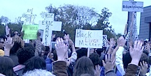

Friends,
On Aug. 9, when a black teenager named Michael Brown was shot and killed by a white police officer, the small city of Ferguson lost its anonymity. Ferguson became a symbol of a criminal justice system that enacts racism on a daily basis, of a political structure that sees some of our civilians as expendable, and of a news media that stokes a racist fear of urban, working-class and poor people of color.
In the days and weeks following the killing of Michael Brown, the people of Ferguson raised their voices and occupied the streets in protest.
 Thousands of human rights workers and concerned citizens have joined them in a newly invigorated movement for justice -- not a new movement, since many communities of color have fought for their existence from the beginning -- and the Fellowship of Reconciliation is among them. Thousands of human rights workers and concerned citizens have joined them in a newly invigorated movement for justice -- not a new movement, since many communities of color have fought for their existence from the beginning -- and the Fellowship of Reconciliation is among them.
Members of FOR have been on the ground in Ferguson, recalling the historic role of FOR in connecting faith communities to the civil rights movement in the 1950s and '60s.
Rev. Osagyefo Sekou
FOR Freeman Fellow and St. Louis-raised Rev. Osagyefo Sekou immediately joined in the peoples' actions. In his groundbreaking interview, Rev. Sekou said:
 "Black Christianity begins with the assumption of black humanity, which is a left-of-center project inside the American empire. The situatedness of the first century Palestinian living under Roman occupation is the same situatedness of black people in America. Thus we must resist in the way which Jesus resisted. We must be present with the least of these as he called and be willing to go to the cross as he did. Anything less is heresy." "Black Christianity begins with the assumption of black humanity, which is a left-of-center project inside the American empire. The situatedness of the first century Palestinian living under Roman occupation is the same situatedness of black people in America. Thus we must resist in the way which Jesus resisted. We must be present with the least of these as he called and be willing to go to the cross as he did. Anything less is heresy."
FOR has brought skills and training to the table in the form of active nonviolent resistance, interpersonal conflict resolution, and coalition-building. FOR members who are working on campaigns to end the mass incarceration system in our country, the use of the death penalty, and the militarization of our communities know that their work is fundamentally based in fighting racism.
Police, prisons, and executions are merely the symptoms of a broken and divided society.
FOR has provided key assistance to this growing movement, particularly in the context of the national "Ferguson October" mobilization. Rev. Sekou partnered with local faith leaders and national organizers from the PICO Network, the Samuel DeWitt Proctor Conference, and Sojourners to launch the "Faith in Ferguson" working group.
In collaboration with Hands Up United, the Don't Shoot Coalition and other key organizations, Faith in Ferguson played a central role in organizing key aspects of the Weekend of Resistance -- including the nonviolent direct action trainings, the "interfaith mass meeting" on Sunday evening, and the "Moral Monday" civil disobedience action which drew widespread coverage.
Jeff Stack
Coordinator of Mid-Missouri FOR Jeff Stack brought four other activists from around the state to Ferguson.
In his blog with reflections from the Missouri activists he brought to the Weekend of Resistance, Jeff wrote:
"An awakening is happening!
"Change will happen as more and more join the courageous people of Ferguson and others struggling over the past two months."
Rev. Hillary Gaston
As FOR's chief operating officer, Rev. Hillary Gaston attended the Ferguson October Weekend of Resistance to assist Rev. Sekou with on-the-ground efforts. As a clergy, former law enforcement officer, and financial expert, Rev. Gaston was uniquely suited to provide "elder statesman" support.
In his reflection on the Ferguson October weekend, Rev. Gaston noted in particular the calls from the young people of Ferguson during the interfaith rally on Sunday:
"Their message, in their language, was simple and concise: We don't need you -- outsiders and older people -- to come here and tell us how we should respond to our pain and suffering. What we do need is for you to provide us with support and guidance. There was a clear indictment of the clergy and church for not being more visible and supportive of the youth and community, both during this period and in the past."
FOR is calling for justice for Mike Brown, but we're also advocating and training for nonviolent and reconciling responses to the underlying issues of police brutality, racial profiling and hypermilitarization in local communities.
George Payne
Founder and director of Gandhi Earth Keepers International, George Payne is an FOR member who traveled from Rochester, NY, to support Ferguson October.
He arrived, he wrote in a reflection, "to bear witness to crimes against humanity which have been no less, or no more evil, than the killing we have heard about overseas."
Bishop John Selders
A supporter of FOR and pastor of Amistad United Church of Christ in Hartford, Connecticut, Bishop Selders reflected about why he felt called to travel to Ferguson for the Weekend of Resistance:
"I know within myself that this is one of those moments, happening in real time, where those of us of faith, passion, and conviction -- with justice and fairness in mind -- must report for duty. Some of us have the chance to go to where the action is, and yet others of us can do our part right where we are."
At FOR headquarters in Nyack, NY
In another reflection in the collection entitled "Our Hearts Are Full of Ferguson," FOR's director of communications Linda Kelly explains why she stands in solidarity with Ferguson. Linda writes:
"The spirits of Michael, Trayvon, Renisha, Shantel, Amadou, and countless others are waking me up. All the young people standing with their hands up before the tanks and machine guns and tear gas are waking me up."
On Oct. 12, while Hands Up Sabbath was happening in Ferguson, Linda, Hailey Pessin, the Peace Poets, and more spoke at the Building Bridges Concert organized by the Rockland Coalition to End the New Jim Crow which was sponsored by and held at FOR's national headquarters in Nyack, NY. More than 100 people gathered to raise awareness about mass incarceration, "Ban the Box," and police brutality; and to stand in solidarity with Ferguson.
Then, more than 50 people gathered at national headquarters on Oct. 23 for a panel discussion that included FOR's training coordinator Gretchen Honnold, who was also on the ground in Ferguson for the Weekend of Resistance. The discussion "After the Climate March, After Ferguson -- Where do we go from here?" explored ways in which to harness the momentum of these tremendous mobilizations of the people to sustain the power to effect real change.
Continuing work for racial justice
We want to know about what you're doing in your communities and in your chapters!
Have you written about your work? Would you like to? We would welcome any reports, reflections, photos or video of your work around racial justice, police brutality, mass incarceration, or community militarization. Just reply to this message! We hope to continue to feature reports from local chapters and FOR supporters on our blog, Facebook, and the Witness newsletter.
Do you consider this to be important work? If you feel so led, make a donation to FOR -- we'll be even more effective with your financial support.
If you'd like to follow and directly support organizations working in Ferguson, we encourage you to join us in backing these groups:
- Hands Up United, a group coordinating many of the online demands being made of local and state leaders. Follow them on Twitter.
- Organization for Black Struggle, a 35-year-old St. Louis area organization fighting for political empowerment, economic justice and the cultural dignity of the African-American community, especially the Black working class. Follow them on Twitter.
- Missourians Organizing for Reform and Empowerment (MORE), a St. Louis-based coalition bringing racial justice into campaigns against police brutality, environmental degradation and attacks on workers' rights. Follow them on Twitter.
- Millennial Activists United, building grassroots power and leadership to create strong, sustainable communities. Follow them on Twitter.
- Lost Voices, young people in Ferguson working to end police brutality across the country.
- October 22 Coalition, organizing nationwide demonstrations for the past 19 years on police brutality, repression and criminalization (New York-based).
For those on Twitter, several voices we've found helpful include:
With your help, FOR will continue to fight against structural and direct violence facing our communities. We will continue to support the vital organizing being overwhelmingly led by working-class youth of color in Ferguson. And, with other faith leaders, we will continue to offer a prophetic vision of liberation that demands change.
Rev. Kristin Stoneking
Executive Director
Fellowship of Reconciliation
Image credits, from top: Heather Wilson, FergusonOctober.com, Heather Wilson, Herb Petty, Rev. Hillary Gaston, Jamelle Bouie (Wikimedia Creative Commons), Rockland Coalition to End the New Jim Crow. |